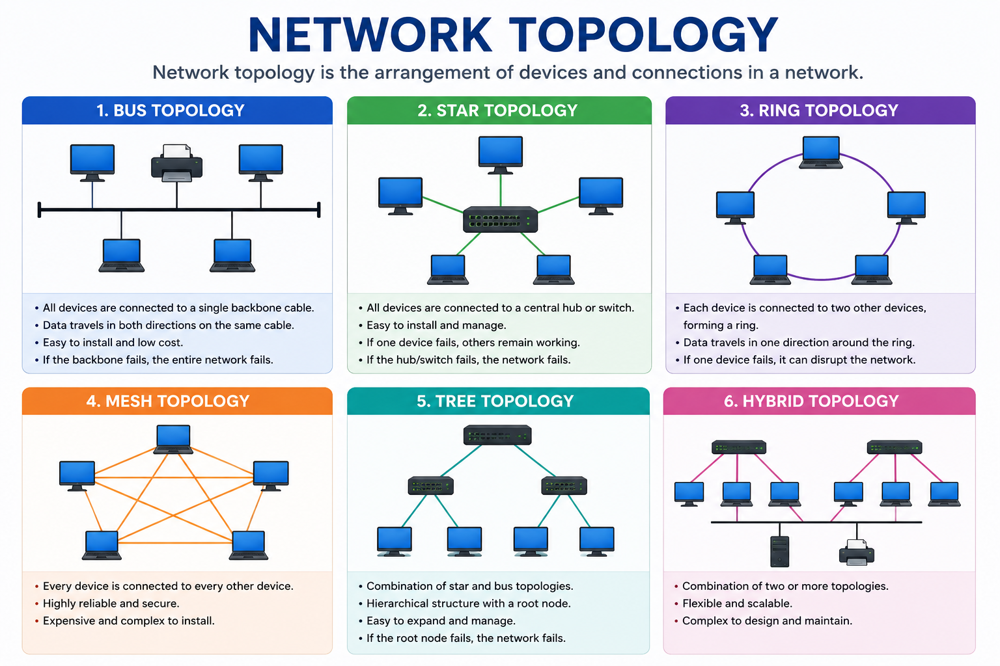

Lesson 6 - Network Topology
- Home
- / Networking Fundamental

Topologies in network refers to the way in which the nodes in network are connected to one another. It determines the various available path between any pair of nodes in network. Choice of network topology depends upon the various factor:
There are several types of network topologies some of which are defines below:
In star topology multiple nodes are connected to a host node. Two nodes can communicate in star topology via host nodes because nodes in a network are linked with each other through host node. Basically, host node perform the routing function that controls the communication between two nodes by establishing the logical path between them.
Each topology has some advantage and disadvantage. Here we mentioned some advantage of using a star topology.
Apart from advantage star topology also have some disadvantage. The only disadvantage with this topology is that if host nodes is fail under any circumstance entire network is fails.
Ring topology is another kind of topology in which each nodes has two communicating subordinate (every nodes is connected to its two adjacent nodes), so there is no need of host node or master node for controlling the network.
Every node receive data from any of its two adjacent nodes. The only decision a node has to take is whether the data is for his own use or not. If its addressed to it, utilize it unless it merely passed it to the next node.
This completely connected network more reliable than above two topologies because there is separate physical link for connecting each node to any other node. Each Nodes has a direct link to other nodes in a network, known as point-to-point link. The control is distributed with each node deciding its communicating priorities.
Bus topology is option for you to reduce the number of physical link because in this network topology all nodes in a network are connected with the single transmission medium.
When a node want to send a message to another node, it depends destination address to the message and check whether communication line is free or not.
If it busy then as soon as line become free, it broadcast the message on the line and when message is travelling in a line each node check whether the message addressed to it.
Finally message is picked up by the addressed node and then acknowledgement message is sent to sender node and free the line.
Hybrid topology is a collection network of different topology used in a big network.
Vinay Bhatt is the Founder of LearnInCreation, an education and technology platform focused on making computer science and digital learning simple, practical, and accessible. He holds a B.Sc. degree from Kumaun University and has professional certifications in Full Stack Web Development, Digital Marketing, and Ethical Hacking. Passionate about education and technology, he creates beginner-friendly courses, practical learning resources, and projects that help students develop real-world skills and prepare for their careers.
LearnInCreation helps students learn computer science and technology through easy-to-understand courses, practical projects, books, e-books like learning resources, enabling them to build skills for academic success and future careers.
Watch old videos of computer lessons, Subscribe us on Youtube